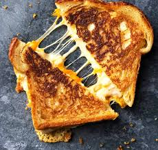

Grilled cheese sandwich is a timeless and beloved comfort food that’s both simple and satisfying. It consists of slices of bread buttered on the outside and filled with cheese, then grilled or pan-fried to golden perfection. The result is a crispy, buttery exterior with a warm, gooey, and melty cheese interior that makes each bite irresistibly delicious.
It’s one of the easiest meals to prepare, requiring just a few basic ingredients and minimal time. Despite its simplicity, grilled cheese can be customized with different types of bread, cheeses, or additional fillings like tomatoes, ham, or herbs, making it versatile and suitable for any time of day. Whether enjoyed as a quick lunch, a cozy dinner, or a midnight snack, grilled cheese always delivers comfort and flavor